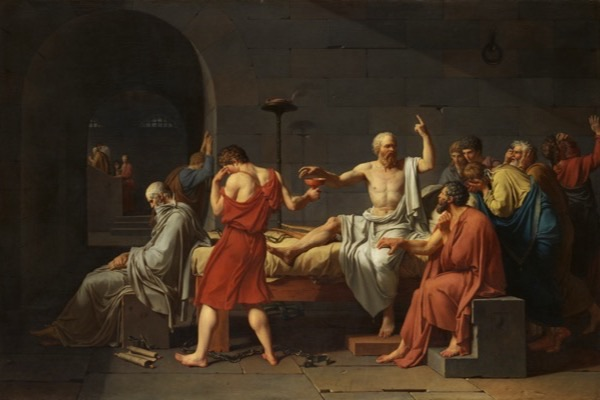
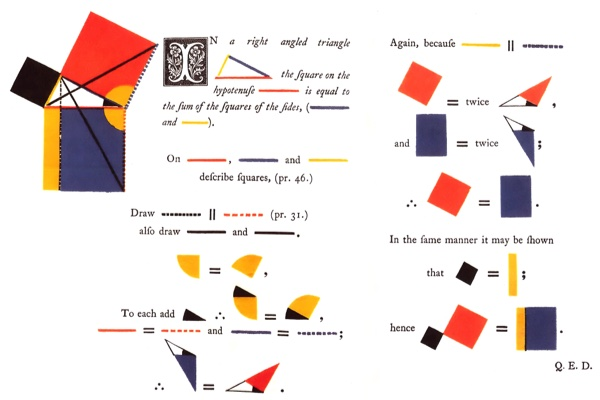
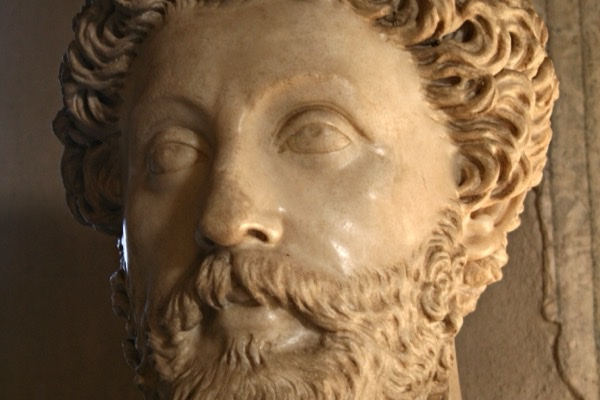
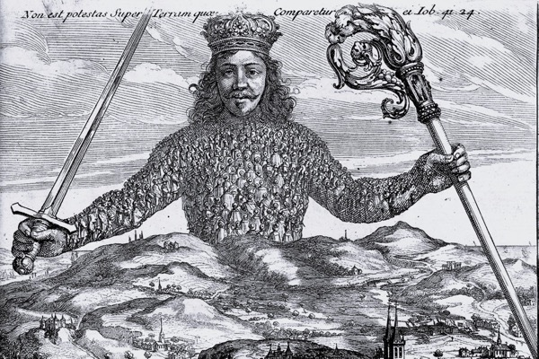
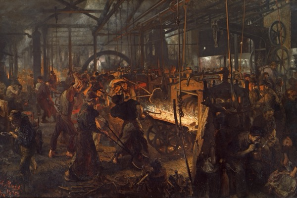
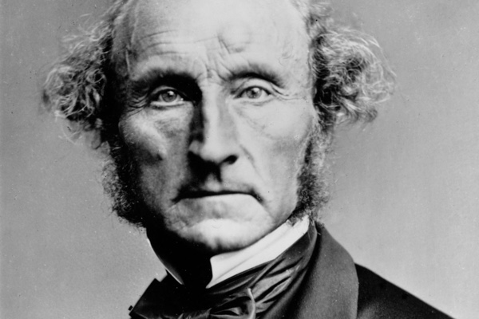
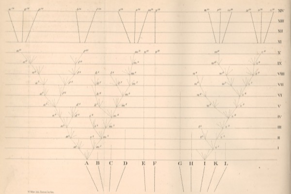
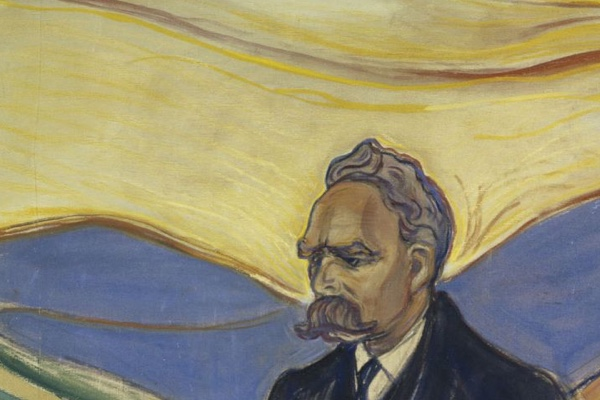
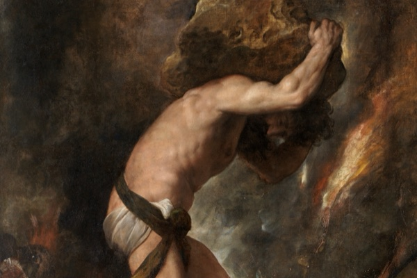
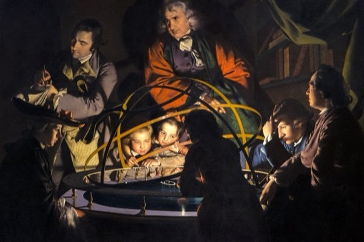

-

Plato
Socrates tested claims to wisdom. Plato imagined giving power to people trained to understand the good, and used the cave story to explain their education.
-

Aristotle
A good character cannot prevent every loss. Seven passages through Aristotle's Ethics examine happiness as activity, the judgment virtue requires, and why even a happy person needs friends.
-

Euclid
Two circles construct a triangle with equal sides. Follow Euclid's first proof and the Pythagorean theorem, then examine the assumptions that allow other geometries to work.
-

Marcus Aurelius
An emperor warns himself against the effects of power. Twenty-eight passages connect judgment and death to providence, moral character, and duties to others, with sourced translation comparisons and plain explanations.
-

Hobbes, Locke, and Rousseau
Hobbes lets a condemned prisoner resist execution. Read his case for sovereignty beside Locke's limited government and Rousseau's general will, with five questions and fifteen primary excerpts.
-
Kant
Kant's honest shopkeeper does the right thing for profit. Seven passages trace the difference between duty and self-interest, then test universal law, human dignity, and the argument for freedom.
-

Karl Marx
Marx and Engels argue that capitalism creates the workers who will overthrow it. Follow their account of ownership and labor, its failed forecasts, and the governments that claimed its legacy.
-

John Stuart Mill
Mill protects unpopular opinions and the freedom to choose your own life. His examples show why harm, social pressure, and even consent leave difficult questions about coercion.
-

Charles Darwin
Darwin starts with pigeon breeders and asks how inherited differences spread in the wild. Eight stops follow his argument through the eye, branching species, and the heredity he could not explain.
-

Nietzsche
Nietzsche asks whether our virtues serve resentment or human flourishing. A walk through moral genealogy, bad conscience, and the ascetic ideal, with the exclusions his alternative cannot escape.
-

Albert Camus
Camus asks whether life needs an ultimate explanation to be worth living. His answer is revolt; Frankl and Nagel help expose what that answer still leaves unresolved.
-
Can You Argue Your Way to God?
Pascal wagers a finite life against eternal happiness. Lewis reasons from conscience and the claims of Jesus; both arguments depend on premises their famous slogans tend to hide.
-

David Deutsch
An explanation of winter becomes a test for how knowledge grows. Follow Deutsch's ideas about universality and optimism, with their physical limits and the questions his argument leaves open.
-
Sapiens, Read Skeptically
A company can outlive everyone who works for it. Harari explains human cooperation through shared beliefs; the evidence complicates his account of farming, happiness, and the future of our species.